No architecture drawings, no block diagrams, no embedding cartoons, no attention-head pictures. A row exists only if both sides are the same metric from the paper.
Quantity: asymptotic ops. Left is the paper’s table. Right is that same O(·) evaluated vs sequence length n at d=512, k=3.
| Layer | Complexity | Sequential | Max path |
|---|---|---|---|
| Self-Attention | O(n² · d) | O(1) | O(1) |
| Recurrent | O(n · d²) | O(n) | O(n) |
| Convolutional | O(k · n · d²) | O(1) | O(log_k n) |
| Self-Attn restricted | O(r · n · d) | O(1) | O(n/r) |
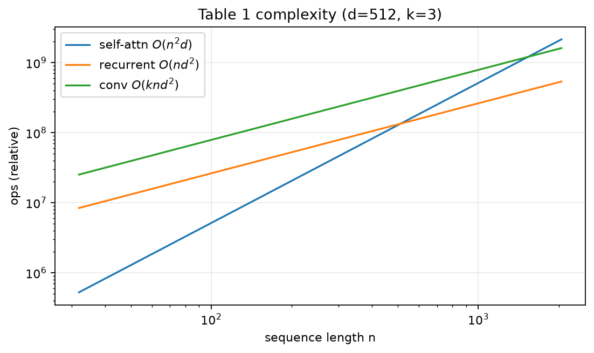
Quantity: BLEU. Same models, same scores as the paper.
| Model | EN-DE | EN-FR |
|---|---|---|
| ByteNet | 23.75 | |
| Deep-Att + PosUnk | 39.2 | |
| GNMT + RL | 24.6 | 39.92 |
| ConvS2S | 25.16 | 40.46 |
| MoE | 26.03 | 40.56 |
| Deep-Att ensemble | 40.4 | |
| GNMT + RL ensemble | 26.30 | 41.16 |
| ConvS2S ensemble | 26.36 | 41.29 |
| Transformer base | 27.3 | 38.1 |
| Transformer big | 28.4 | 41.8 |
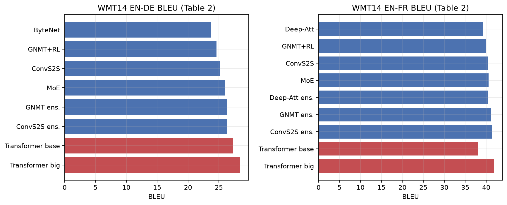
Quantity: estimated training FLOPs from the same table.
| Model | FLOPs |
|---|---|
| GNMT + RL | 2.3e19 |
| ConvS2S | 9.6e18 |
| MoE | 2.0e19 |
| Transformer base | 3.3e18 |
| Transformer big | 2.3e19 |
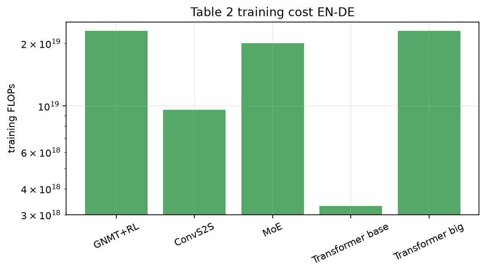
Quantity: newstest2013 BLEU and wordpiece PPL while holding compute ~constant.
| h | d_k=d_v | PPL | BLEU |
|---|---|---|---|
| 1 | 512 | 5.29 | 24.9 |
| 4 | 128 | 5.00 | 25.5 |
| 8 | 64 | 4.92 | 25.8 |
| 16 | 32 | 4.91 | 25.8 |
| 32 | 16 | 5.01 | 25.4 |
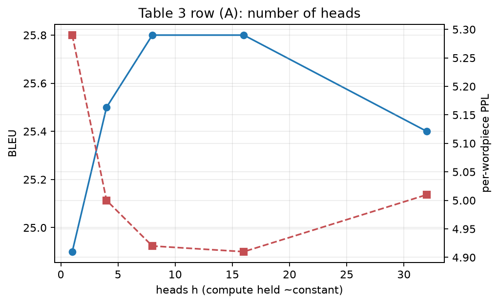
Quantity: dev BLEU vs encoder/decoder depth. Base N=6 is 25.8.
| N | PPL | BLEU |
|---|---|---|
| 2 | 6.11 | 23.7 |
| 4 | 5.19 | 25.3 |
| 6 (base) | 4.92 | 25.8 |
| 8 | 4.88 | 25.5 |
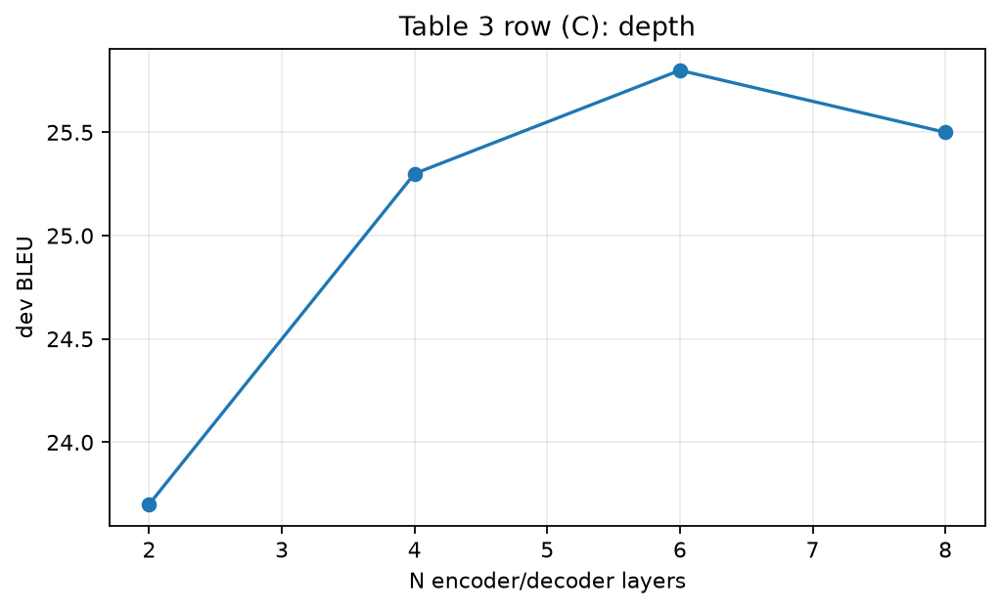
Quantity: P_drop vs dev BLEU. Paper’s base is 0.1.
| P_drop | PPL | BLEU |
|---|---|---|
| 0.0 | 5.77 | 24.6 |
| 0.1 (base) | 4.92 | 25.8 |
| 0.2 | 4.95 | 25.5 |
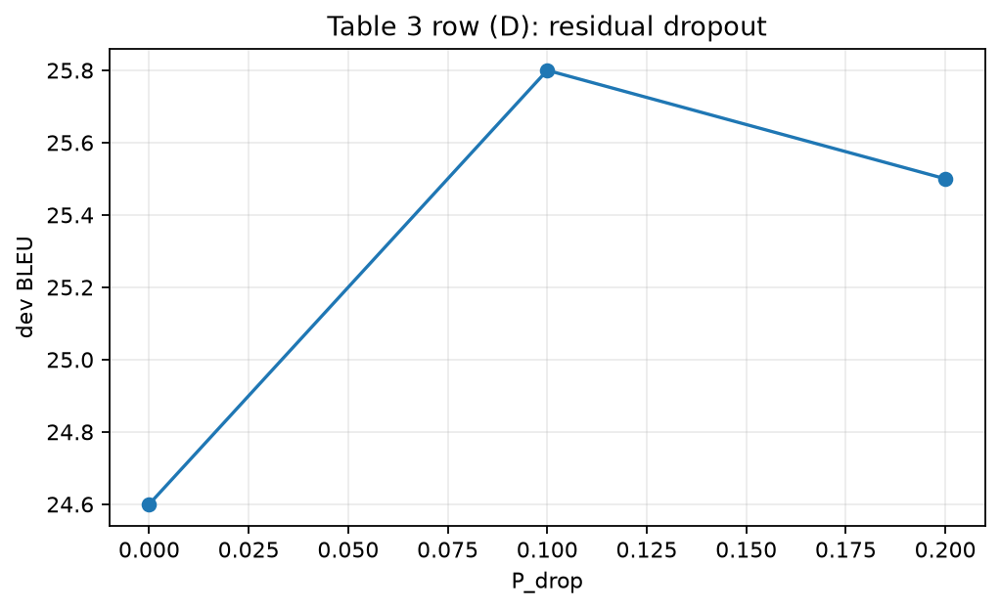
Quantity: F1. Same parsers and scores.
| Parser | WSJ 23 F1 |
|---|---|
| Vinyals WSJ disc. | 88.3 |
| Petrov WSJ disc. | 90.4 |
| Dyer WSJ disc. | 91.7 |
| Transformer 4L WSJ | 91.3 |
| Transformer 4L semi-sup | 92.7 |
| Dyer generative | 93.3 |
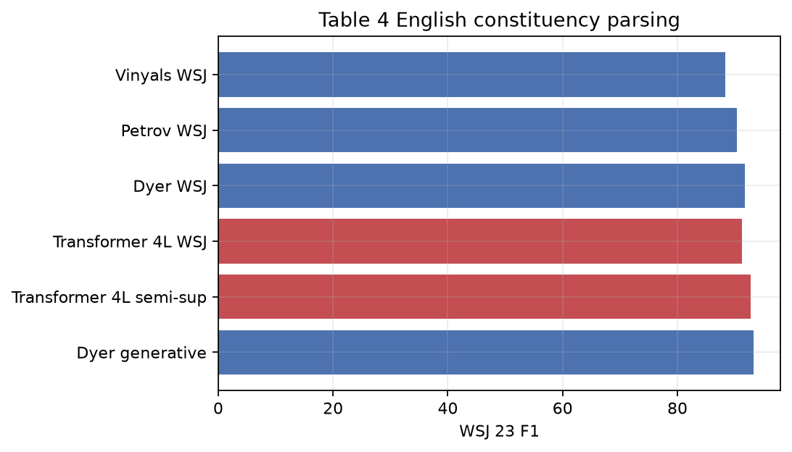
Quantity: lrate(step) with d_model=512, warmup=4000. Paper printed the formula, not a figure; both sides are that same function.
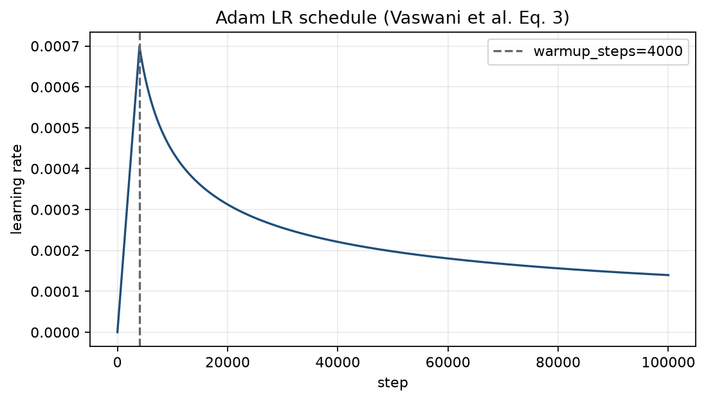
Quantity: GLUE metrics (acc / F1 / Spearman as in the paper). WNLI excluded from their average.
| System | MNLI-m/mm | QQP | QNLI | SST-2 | CoLA | STS-B | MRPC | RTE | Avg |
|---|---|---|---|---|---|---|---|---|---|
| Pre-OpenAI SOTA | 80.6/80.1 | 66.1 | 82.3 | 93.2 | 35.0 | 81.0 | 86.0 | 61.7 | 74.0 |
| BiLSTM+ELMo+Attn | 76.4/76.1 | 64.8 | 79.8 | 90.4 | 36.0 | 73.3 | 84.9 | 56.8 | 71.0 |
| OpenAI GPT | 82.1/81.4 | 70.3 | 87.4 | 91.3 | 45.4 | 80.0 | 82.3 | 56.0 | 75.1 |
| BERT-base | 84.6/83.4 | 71.2 | 90.5 | 93.5 | 52.1 | 85.8 | 88.9 | 66.4 | 79.6 |
| BERT-large | 86.7/85.9 | 72.1 | 92.7 | 94.9 | 60.5 | 86.5 | 89.3 | 70.1 | 82.1 |
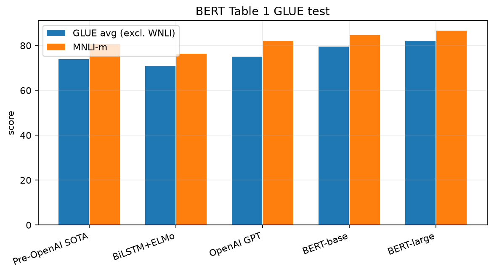
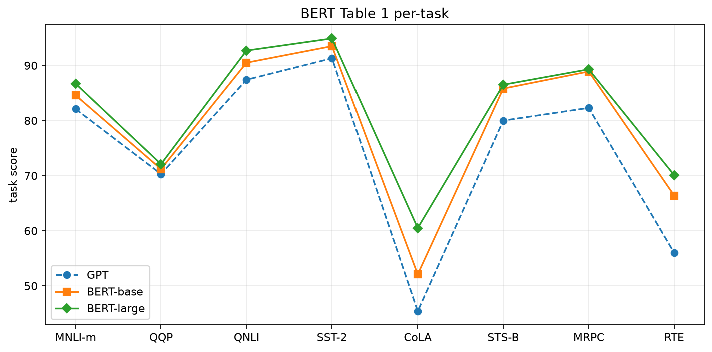
Quantity: F1 (and EM in the paper). Charts use the F1 column only, same systems.
| System | Set | F1 |
|---|---|---|
| Human | v1.1 test | 91.2 |
| BiDAF+ELMo | v1.1 test | 85.8 |
| BERT-base | v1.1 dev | 88.5 |
| BERT-large | v1.1 dev | 90.9 |
| BERT-large+TriviaQA | v1.1 test | 91.8 |
| BERT ens.+TriviaQA | v1.1 test | 93.2 |
| Human | v2.0 test | 89.5 |
| MIR-MRC | v2.0 test | 78.0 |
| unet ensemble | v2.0 test | 74.9 |
| BERT-large | v2.0 test | 83.1 |
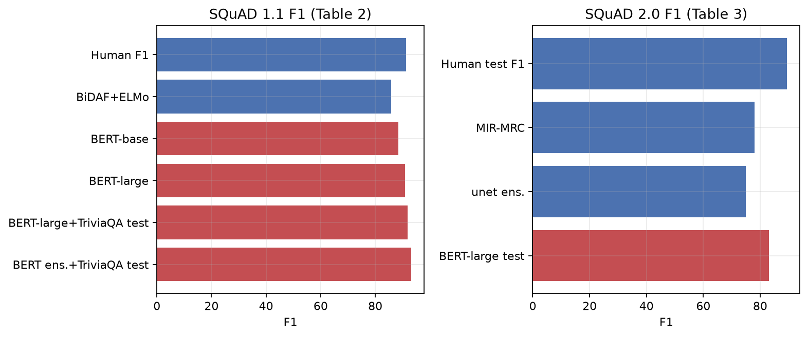
Quantity: accuracy on SWAG test (dev where test missing).
| System | Dev | Test |
|---|---|---|
| ESIM+GloVe | 51.9 | 52.7 |
| ESIM+ELMo | 59.1 | 59.2 |
| OpenAI GPT | 78.0 | |
| BERT-base | 81.6 | |
| BERT-large | 86.6 | 86.3 |
| Human (expert) | 85.0 | |
| Human (5 ann.) | 88.0 |
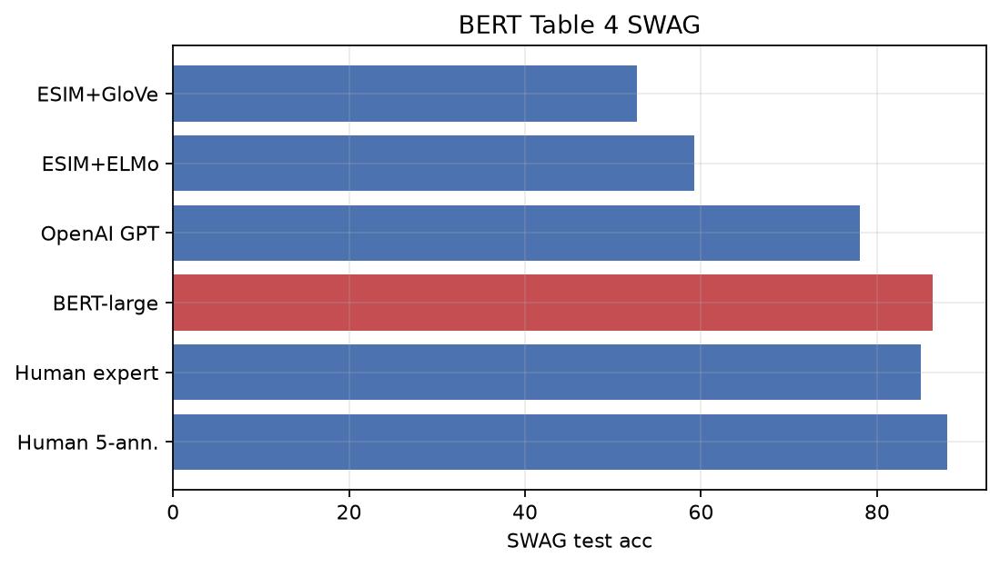
Quantity: task score under BERT-base vs No NSP vs LTR & No NSP.
| Tasks | MNLI-m | QNLI | MRPC | SST-2 | SQuAD F1 |
|---|---|---|---|---|---|
| BERT-base | 84.4 | 88.4 | 86.7 | 92.7 | 88.5 |
| No NSP | 83.9 | 84.9 | 86.5 | 92.6 | 87.9 |
| LTR & No NSP | 82.1 | 84.3 | 77.5 | 92.1 | 77.8 |
| + BiLSTM | 82.1 | 84.1 | 75.7 | 91.6 | 84.9 |
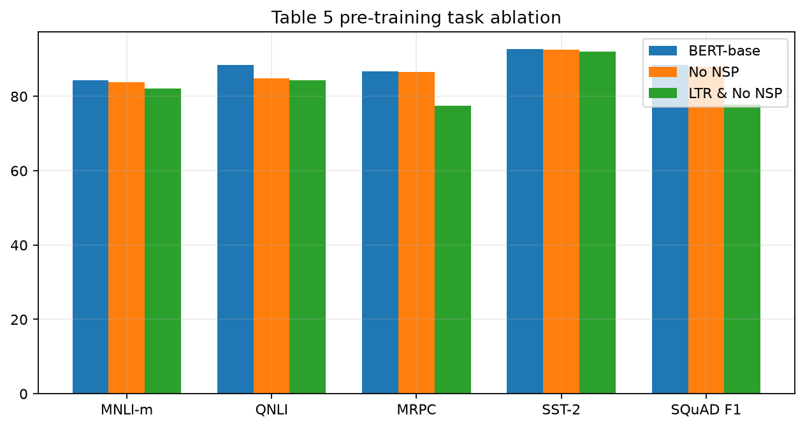
Quantity: held-out MLM perplexity and MNLI-m vs (L, H, A).
| #L | #H | #A | LM ppl | MNLI-m | MRPC | SST-2 |
|---|---|---|---|---|---|---|
| 3 | 768 | 12 | 5.84 | 77.9 | 79.8 | 88.4 |
| 6 | 768 | 3 | 5.24 | 80.6 | 82.2 | 90.7 |
| 6 | 768 | 12 | 4.68 | 81.9 | 84.8 | 91.3 |
| 12 | 768 | 12 | 3.99 | 84.4 | 86.7 | 92.9 |
| 12 | 1024 | 16 | 3.54 | 85.7 | 86.9 | 93.3 |
| 24 | 1024 | 16 | 3.23 | 86.6 | 87.8 | 93.7 |
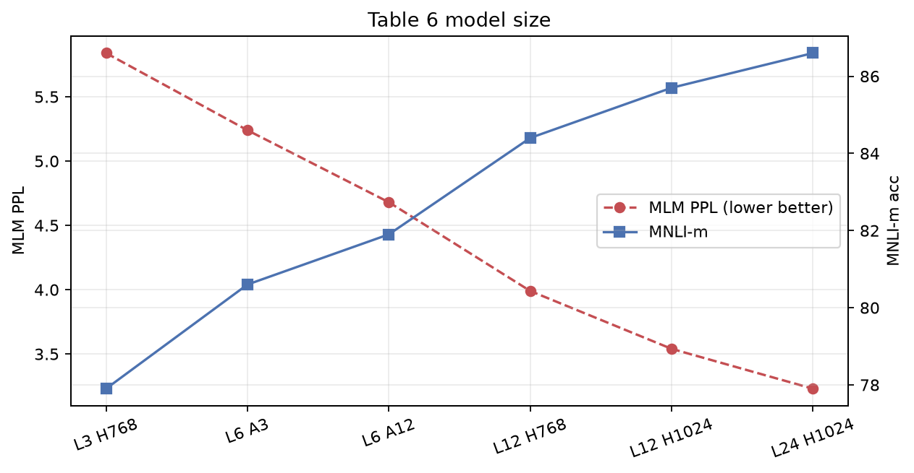
Quantity: CoNLL-2003 F1. Chart uses the paper’s listed F1 numbers (dev/test mixed as published).
| System | F1 |
|---|---|
| Embeddings (feat.) | 91.0 Dev |
| Second-to-last | 95.6 Dev |
| Last hidden | 94.9 Dev |
| Weighted last 4 | 95.9 Dev |
| Concat last 4 | 96.1 Dev |
| BERT-large fine-tune | 92.8 Test |
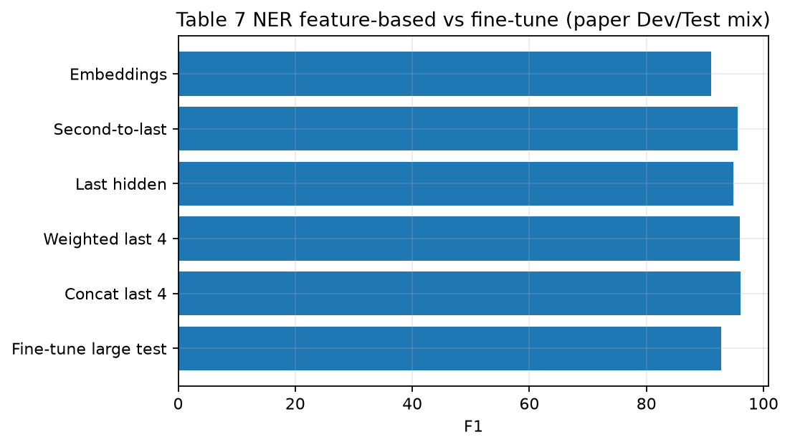
Quantity: share of the chosen 15% tokens. Paper states 80 / 10 / 10. Right is a sampled draw of that same recipe (finite-n noise around those rates).
| Among 15% chosen positions | Share |
|---|---|
| [MASK] | 80% |
| random token | 10% |
| unchanged | 10% |
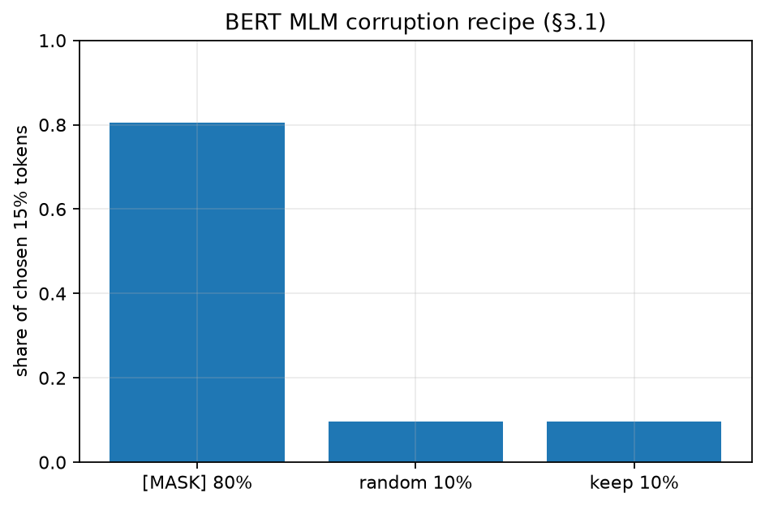